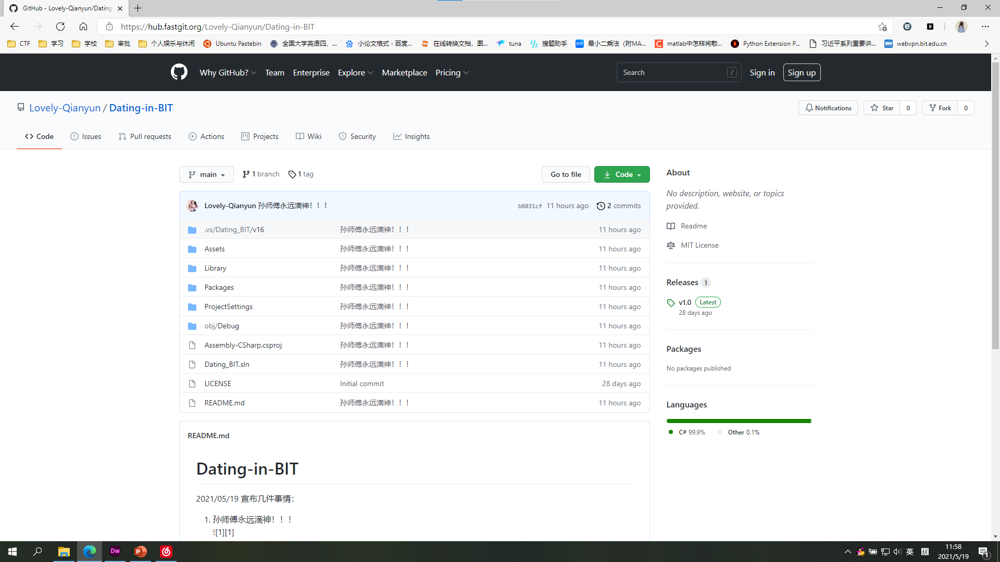

似此星辰非昨夜，为谁风露立中宵。
小姜同学通过软件对系统进行模拟 ，利于demo的编写。
然后是一个悲伤的故事。。。
完成整体框架的搭建，完成了部分页面的编写。
谁是永远滴神不用我多说了吧？
 项目地址明确了系统所应用人际匹配算法的具体细节。
下为算法珍贵手稿，由\晖晖子/友情提供。
//接收用户信息进行注册
READ user information
BEGIN IF
IF(user information.type is BITer)
THEN Add user information to the database
ELSE return false
END IF
//匹配
READ user information
DO WHILE the match is not successful
READ another user information
BEGIN IF
IF(their information is similar)
the match is successful
END IF
END DO
//发布活动
READ activity information
SEND activity information TO administrator
READ administrator result
BEGIN IF
IF(result is true)
Add activity information to the Activity Page
ELSE return false
END IF
本小组最终成果效果视频已出，demo正在紧张编写中，技术博客在进一步完善。
本次大作业充分锻炼了我们的实践能力，希望我们能在下一次展示中带给大家更好作品。